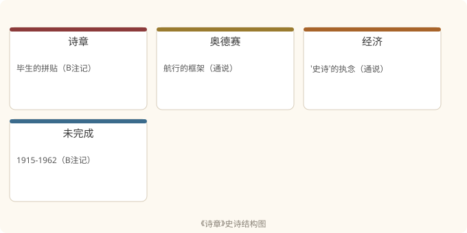

诗章
一、基本信息
| 作者 | 庞德 |
|---|---|
| 成书/出版 | 1915-1962年（作者页注记：Britannica——诗章（The Cantos, 1915—1962）——毕生巨作（begun 1915）） Ezra Pound — Encyclopaedia Britannica（百科全书） |
| 国别/地区 | 美国 |
| 时代 | 近代 · 20世纪（1915—1962） |
| 体裁 | 现代史诗（未完成） |
| 语言 | 英语 |

《诗章》史诗结构图（主题·结构图）
二、创作背景
作者页注记：诗章——'毕生巨作（Britannica：begun 1915）'——至1962。
Britannica：庞德——现代主义的组织者（作者页交叉）。
题材（通说待核）：100余章的'现代史诗'——奥德赛框架与经济'史诗'。
三、内容脉络
（通说待核）起于'安塞斯之航'（Canto I 译涅斯托尔——通说待核）。
（通说待核）比萨诗章与中国山（Canto LXXXIV等——通说待核）。
四、主要人物表
| 人物 | 身份 | 说明 |
|---|---|---|
| 诗人/航行者 | 多声部 | （通说待核） |
五、主题与艺术特点
- '现代史诗'的野心（B注记：毕生巨作）。
- 经济与文化的'史诗'（通说待核）。
- 'Make it new'的实践（通说待核）。
六、影响与评论
- Britannica：The Cantos——'begun 1915'（作者页注记）。
Ezra Pound — Encyclopaedia Britannica（百科全书） - Britannica：庞德意象派与现代主义（作者页交叉）。
Ezra Pound — Encyclopaedia Britannica（百科全书）
七、阅读建议
难点
- 多语言的拼贴。
- '未完成'的体例。
- 《诗章》中译本（人民文学等——通说待核）。
- 英文原版。
庞德巨著；配合《莫伯利》与导读阅读。
八、待核实
- 章数（109+残章说）核对（通说）。
- 各卷出版年份待核。
- '比萨诗章'细节待核。